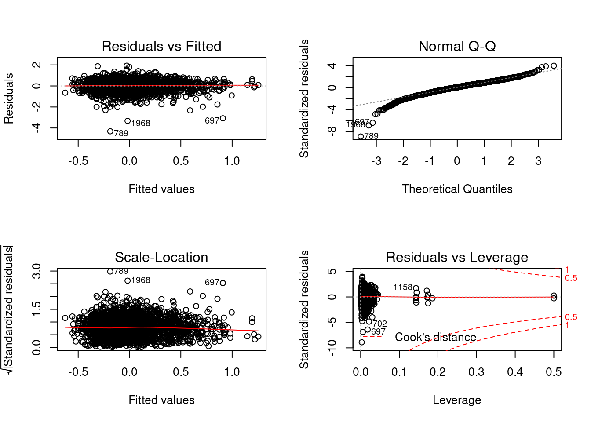
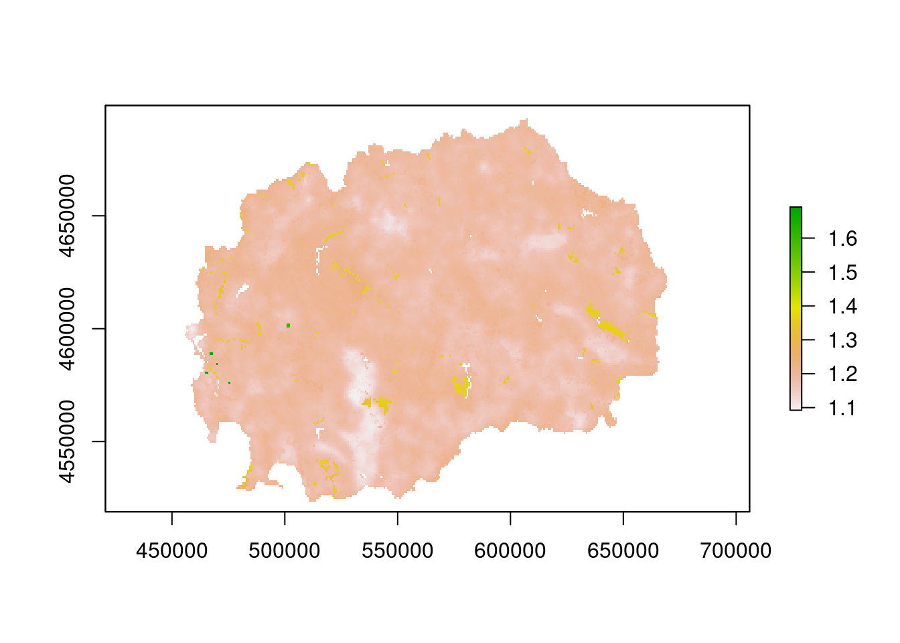

Chapter 6 Mapping Methods
R Baritz, M Guevara, VL Mulder, GF Olmedo, C Thine, RR Vargas, Y Yigini
In this chapter we want to introduce 5 different approaches for obtaining the SOC map for FYROM. The first two methods presented are classified as convetional upscaling. The first one is class-matching. In this approach we derive average SOC stocks per class: soil type for which a national map exists, or combination with other spatial covariates (e.g. land use category, climate type, biome, etc.). This approach is used in the absence of spatial coordinates of the source data. The second one is geo-matching, were upscaling is based on averaged SOC values per mapping unit. Then, we present 3 methods from digital soil mapping. Regression-Kriging is a hybrid model with both, a deterministic and a stochastic component (Hengl, Heuvelink, and Rossiter 2007). Next method is called random forest. This one is an ensemble of regression trees based on bagging. This machine learning algorithm uses a different combination of prediction factors to train multiple regression trees (Breiman 1996). The last method is called support Vector Machines (SVM). This method applies a simple linear method to the data but in a high-dimensional feature space non-linearly related to the input space (Karatzoglou, Meyer, and Hornik 2006). We present this diversity of methods because there is no best mapping method for digital soil mapping, and testing and selection has to be done for every data scenario (Guevara et al. 2018).
6.1 Conventional Upscaling Using Soil Maps
R Baritz, VL Mulder
6.1.1 Overview
The two conventional upscaling methods, in the context of SOC mapping, are described by . Details about weighted averaging can be found in . Different conventional upscaling approaches were applied in many countries (Baritz et al. 1999 (Germany), (Mexico), (Denmark), Koelli et al. 2009 (Estonia), (France), (Canada)). Because the structure of soil map databases differs between countries (definition of the soil mapping unit, stratification, soil associations, dominating and co-dominating soils, typical and estimate soil properties for different depths), it is difficult to define a generic methodology for the use of these maps for mapping soil property information.
However, the essential principle which is commonly used, is to combine soil property data from local observations with soil maps via class- and geomatching.
Diversity of national soil legacy data sets in order to develop a representative and large national soil database, very often, data from different sources (e.g. soil surveys or projects in different parts of the country at different times) are combined. The following case of Belgium demonstrates how available legacy databases could be combined. Three different sources are used to compile an overview of national SOC stocks:
Data source 1: soil profile database with 13,000 points of genetic horizons; for each site, there is information about the soil series, map coordinates and land use class; for each horizon, there is information about depth and thickness, textural fractions and class, volume percentage of rock fragments; analytically, there is the organic carbon content and inorganic carbon content.
Data source 2: forest soil data base which includes ectorganic horizons. According to their national definition, the term “ectorganic” designates the surface horizons with an organic matter content of at least \(30\%\), thus, it includes both the litter layer and the organic soil layers. For the calculation of SOC stocks for the ectorganic layer, no fixed-depth was used, instead the measured thickness of the organic layers and litter layers was applied.
Data source 3: 15,000 soil surface samples were used (upper 20 cm of mineral soil); carbon measurements are available per depth class.
From all data sources, SOC stocks for peat soils were calculated separately.
6.1.2 Technical Steps: Class-matching
6.1.2.1 Data Preparation
- Separate the data base for forests, peat and other land uses If only horizons are provided: derive or estimate average depth of horizons per soil type; add upper and lower depth.
- Check completeness of parameters per depth using the solum depth to code empty cells
- Correction of organic carbon in case total carbon was determined (total carbon minus inorganic carbon concentration)
- Correction of Walkley and Black method for incomplete oxidation (1.32)
- If BD measured is lacking, select proper pedotransfer functions (PTF) and estimate BD. There are many PTF. At best, publications about the choice of the best suited PTF for specific physio-geographic conditions are available.
- If stone content is missing, investigate using other data sources or literature, to which a correction for stones should be applied
- if possible, derive the standard average stone content for different soils/horizons/depths, or used published soil profiles, as a simple correction factor.
- Calculate SOC stocks for all mineral and peat soils over 0-30 cm, and optionally for forest organic layers and, peat >30 <100 cm.
6.1.2.2 Preparatory GIS Operations
- Prepare Covariates
- Identify properties of covariates for each point observation using geo-matching
- Mapping using geo-matching of all points: Extract the covariate information to all georeferenced sample sites. The SOC values from all points within the unit are then averaged. It is assumed that the points represent the real variability of soil types within the units
6.1.2.3 Mapping
- Mapping using class-matching of points in agreement with classes
Through class-matching, only those points or profiles are attributed to a soil or landscape unit if both the soil and the land use class are the same. Class-matching thus can be performed regardless of the profile location. Before averaging, a weighing factor can be introduced according to the area proportions of dominant, co-dominant and associated soils. Each profile needs to be matched to its soil type/landscape type, and the SOC value averaged. 1. Determine a soil or landscape unit (e.g. national soil legend stratified by climate area and main land cover type (forest, grassland, cropland) 2. Calculate average SOC stocks from from all soils which match the soil/landscape unit 3. Present the Soil/landscape map with SOC stocks, do not classify SOC stocks into groups (e.g. < 50, 50-100, > 100).
Note: Pre-classified SOC maps cannot be integrated into a global GSOCmap legend.
- Mapping using geo-matching
Because of its importance, geo-matching is described in more detail.
6.1.3 Technical Steps: Geo-Matching
It is important to first prepare the working environment pre-processed all input data. The following section presents different Geo-matching procedures;
- Setting up software and working environment
- Geo-matching SOC with WRB Soil map (step-by-step, using the Soil Map of FYROM and the demonstration data presented above)
- Geo-matching SOC with other environmental variables: Land use
- Finally, the development of Landscape Units (Lettens et al. 2004) is outlined.
This example was developed for QGIS and focusses on SOC mapping using vector data. QGIS 2.18 with GRASS 7.05 will be used. For more information, see also:
6.1.3.1 Setting Up a QGIS Project
- Install QGIS and supporting software; download the software at http://www.qgis.org/en/site/forusers/download.html (select correct version for Windows, Mac or Linux, 32 or 64 bit).
- Create a work folder, e.g. D:\GSOC\practical_matching. Copy the folder with the FYROM demonstration data into this folder.
- Start ‘QGIS desktop with GRASS’ Figure 8.1 shows the start screen of QGIS desktop. In the upper left panel there is the browser panel, which lists the geodata used for this example. In the bottom left, the layer information is given for the layers displayed on the right.

QGIS Desktop with the browser panel on the upper left, the layer information on the bottom left and the display of your layers on the right.
- Load the FYROM soil map. Right-click the file in the Browser panel and add the map to your project.
- Display the soil classes. Right-click on the file in the Layers Panel, properties. Go to Style and change from ‘Single symbol’ to ‘Categorized’ (Fig. 8.2). Select the column ‘WRB’ and press the icon ‘Classify’ and change the colours if you want. Next, apply the change and finish with clicking the OK-button.
Load the FYROM Soil Map
- Ensure the correct projection for this project. Go to: Project -> Project properties -> CRS In this case, you automatically use the local projection for FYROM. The EPSG code is 3909 which corresponds to MGI 1901/ Balkans zone 7 (Figure 8.3).

Project properties and projection settings
- Save the project in the created folder Load and display the pre-processed SOC point data. If a shapefile already exists, this is done the same way as described in Step 4. If you have the data as a text file, you need to create a vector layer out of that file. Go to Layer -> Add Layer -> Add Delimited Text layer. Select the correct file and proper CRS projection. The layer should be added to your Layers Panel and displayed on top of the Soil Map.
6.1.3.2 Geo-Matching SOC with WRB Soil Map
In this section you will make a SOC map, based on the FYROM Soil Map and the SOC values at the sampled points, following 3 steps: 1) Extract the soil map information for the point data, 2) obtain the mean and standard deviation of the SOC stocks per soil class, based on the point data and 3) assign these values to the corresponding soil map units. The steps are detailed below:
- Extract the soil map information to the soil profile data by ‘Join Attributes by location’. Vector -> Data Management Tools -> Join Attributes by location. Here, the target vector layers are the soil point data, and the join vector layer is the FYROM Soil Map. The geometric predicate is ‘intersects’. Specify at the ‘joined table’ to keep only matching records and save the ‘joined layer’ as a new file (Fig. 8.4).

Join attributes by location
- Check the newly generated file, open the attribute table. The new file is added to the ‘Layers Panel’ . Right-click on the file and open the attribute table. The information from the FYROM Soil Map is now added to the soil point data.
- Most likely, the SOC values in the table are not numeric and thus statistics cannot be calculated. Check the data format, right-click on the file in the ‘Layers Panel’ and check the Type name of the SOC field under the tab ‘Fields’. If they are not integer then change the format.
- Change of the data format: Open the attribute table and start editing (the pencil symbol in the upper left corner of your table). Open the field calculator and follow these instructions (Fig. 8.5):
- Check box: Create a new field
- Output field name: Specify the name of your field
- Output field type: Decimal Number (real)
- Output field length: 10, precision: 3
- Expression: to_real(‘SOC’), the to_real function can be found under ‘conversions’ and the ‘SOC’ field is found under ‘Fields and Values’
Example field calculator
- After calculating the field, save edits and leave the editing mode prior to closing the table. If changes are not saved, the added field will be lost.
- Calculate the median SOC stock per soil type. Go to the tab ‘Vector’-> group stats. Select the layer from the spatial join you made in Step 2. Add the field ‘SOC’ and median to the box with ‘Values’ and the field ‘WRB’ to the ‘Rows’. Make sure the box with ‘use only selected features’ is not checked. Now calculate the statistics. A table will be given in the left pane (Figure 8.6). Save this file as .csv and repeat the same for the standard deviation.

Calculate group statistics
- Join the mean and standard deviation of SOC to the Soil Map. First add the files generated during step 6 to the Layers Panels. In the Layers Panel, right-click on the FYROM Soil Map. Go to Properties -> Joins and add a new join for both the median and standard deviation of SOC. The Join and Target Field are both ‘WRB’.
- Display the SOC maps. Go to the layer properties of the FYROM Soil Map. Go to Style and change the legend to a graduated legend. In the column you indicate the assigned SOC values. Probably this is not a integer number and so you have to convert this number again to a numeric values. You can do this with the box next to the box (Fig. 8.7). Change the number of classes to e.g. 10 classes, change the mode of the legend and change the color scheme if you want and apply the settings. Now you have a map with the median SOC stocks per WRB soil class.

Change the legend style to display the SOC values
- In order to generate a proper layout, go to Project -> New Print Composer
- Add map using Layout -> Add Map. Define a square on the canvas and the selected map will be displayed.
- Similarly, title, scale bar, legend and a north arrow can be added. Specific properties can be changed in the box ‘Item properties’.
- When the map is finished, it can be exported as an image or pdf.

Example of the Map composer
- Repeat step 2-8 but now for the standard deviation of the SOC stocks.
- Save the file as a new shapefile: Go to ‘Layer Panels -> Save as -> ESRI ShapeFile and make sure that you define the symbology export: Feature Symbology. Now, a shapefile is generated, with both the median and standard deviation SOC stock per soil type. Redundant fields can be removed after the new file is created.
6.1.3.3 Geo-Matching SOC with Other Environmental Variables: Land Use
- Start a new project and add the soil point data and FYROM Soil Map layers from the Browser panel
- Add the Land Use raster file to the Layers Panels. This is a raster file with 1 kilometre resolution and projected in lat long degrees (WGS84). For more information about this product see the online information from worldgrids: http://worldgrids.org/doku.php/wiki:glcesa3
- Change the projection to the MGI 1901/ Balkans region7. Go to Raster -> Projections -> Warp and select the proper projection and a suitable file name, e.g. LU_projected_1km. Tick the checkbox for the resampling method and choose Near. This is nearest neighbour and most suitable for a transformation of categorical data, such as land use (Fig. 8.9).

Change the projection of a raster file
- In order to geomatch the soil point data with Land Use, the raster file needs to be converted into a vector file. Go to Raster -> Conversions -> Polygonize. Set a proper output filename, e.g. LU_polygon_1km, and check the tickbox for Fieldname.
- Change the legend style into categories (Step 1-5): Now, the steps from the previous section need to be repeated, using the land use polygon map instead of using the FYROM Soil Map.
- Join attributes by location using the soil point data and the polygon land use map.
- Calculate the median and standard deviation of SOC by using the Group Statistics for SOC and the Land Use classes and save the files as .csv.
- Add the generated .csv files to the Layers Panel.
- Join the files with the LU polygon map, generated at step 3-4.
- Change the classes in the legend and inspect the histogram with the median SOC values. Try to find a proper definition of the class boundaries (Step 2-8).
6.1.3.4 Joining Landscape Units and Soil Mapping Units to Support Class- and Geo-Matching (Optional)
In this section it is outlined how SOC stocks can be mapped following the method outlined by . The general idea is that the landscape is stratified into more or less homogenous units and subsequently, the SOC stocks are obtained following the procedure outlined earlier in this practical. outlines a method to stratify the landscape into homogeneous strata with respect to Land Use and Soil Type, as was explained earlier. In order to obtain such strata, the Soil Map and the Land Use map need to be combined. This can be done using various types of software, e.g. ArcMap, GRASS, QGIS or R. When using the GIS software, the only thing that needs to be done is intersecting the vector files and dissolving the newly created polygon features. Depending on the software and the quality of your shapefile you may experience problems with the geometry of your shapefile. Generally, ArcMap and GRASS correct the geometry when the shapefile is loaded, while QGIS does not do this automatically. There are various ways to correct the geometry, however, correcting the geometry falls outside the scope of this training. Therefore, we give some hints on how to correct your geometry prior to using the functions ‘Intersect’ and ‘Dissolve’.
- Change the LU raster map to 5 kilometer resolution: Right-click the Lu_project_1km file and select Save as. Change the resolution to 5000 meters. Scroll down, check the Pyramids box, and change the resampling method to Nearest Neighbour.
- Convert the raster map to a polygon map and add the file to the Layers Panel
- Check the validity of the Soil Map and Land Use Map: Vector -> Geometry Tools -> Check Validity Below you find the instructions in case you have no problems with your geometry:
- Intersect the Soil Map and the Land Use Map. In ArcGIS and QGIS you can use this function. Go to Vector -> Geoprocessing tools -> Intersection. (In GRASS you have to use the function ‘Overlay’ from the Vector menu)
- Dissolve the newly generated polygons. Vector -> Geoprocessing tools -> Dissolve
- Next, this layer can be used to continue with the classmatching or geomatching procedures.
When encountering problems with the geometry there are at least three ways to correct your geometry:
- Run the v_clean tool from GRASS within QGIS. Open the Processing ToolBox -> GRASS GIS 5 commands -> Vector -> v.clean
- Install the plugin ‘Processing LWGEOM Provider’. Go to the Plugins menu and search for the plugin and install. You can find the newly installed tool in the Processing Toolbox by typing the name in the search function
- Manually correct the error nodes of the vector features
6.2 Regression-Kriging
GF Olmedo & Y Yigini
6.2.1 Overview
Regression-kriging is a spatial interpolation technique that combines a regression of the dependent variable (target variable) on predictors (i.e. the environmental covariates) with kriging of the prediction residuals. In other words, Regression-Kriging is a hybrid method that combines either a simple or a multiple-linear regression model with ordinary kriging of the prediction residuals. The Multiple regression analysis models the relationship of multiple predictor variables and one dependent variable, i.e. it models the deterministic trend between the target variable and environmental covariates. The modelled relationship between predictors and target are summarized in regression equation, which can then be applied to a different data set in which the target values are unknown but the predictor variables are known. The regression equation predicts the value of the dependent variable using a linear function of the independent variables. In this section, we review the regression kriging method. First, the deterministic part of the trend is modelled using a regression model. Next, the prediction residuals are kriged. In the regression phase of a regression-kriging technique, there is a continuous random variable called the dependent variable (target) Y (in our case SOC) and a number of independent variables which are selected covariates, x1, x2,…,xp. Our purpose is to predict the value of the dependent variable using a linear function of the independent variables. The values of the independent variables (environmental covariates) are known quantities for purposes of prediction, the model is:
6.2.2 Assumptions
Standard linear regression models with standard estimation techniques make a number of assumptions about the predictor variables, the response variables and their relationship. One must review the assumptions made when using the model.
Linearity: The mean value of Y for each specific combination of the X’s is a linear function of the X’s. In practice this assumption can virtually never be confirmed; fortunately, multiple regression procedures are not greatly affected by minor deviations from this assumption. If curvature in the relationships is evident, one may consider either transforming the variables, or explicitly allowing for nonlinear components. Normality Assumption: It is assumed in multiple regression that the residuals (predicted minus observed values) are distributed normally (i.e., follow the normal distribution). Again, even though most tests (specifically the F-test) are quite robust with regard to violations of this assumption, it is always a good idea, before drawing final conclusions, to review the distributions of the major variables of interest. You can produce histograms for the residuals as well as normal probability plots, in order to inspect the distribution of the residual values. Collinearity: There is not perfect collinearity in any combination of the X’s. A higher degree of collinearity, or overlap, among independent variables can cause problems in multiple linear regression models. Collinearity (also multicollinearity) is a phenomenon in which two or more predictors in a multiple regression model are highly correlated. Collinearity causes increase in variances and relatedly increases inaccuracy. Distribution of the Errors: The error term is normally distributed with a mean of zero and constant variance. Homoscedasticity: The variance of the error term is constant for all combinations of X’s. The term homoscedasticity means “same scatter.” Its antonym is heteroscedasticity (“different scatter”).
6.2.3 Pre-Processing of Covariates
Before using the selected predictors, multicollinearity assumption must be reviewed. As an assumption, there is not perfect collinearity in any combination of the X’s. A higher degree of collinearity, or overlap, among independent variables can cause problems in multiple linear regression models. The multicollinearity of number of variables can be assessed using Variance Inflation Factor (VIF). In R, the function vif() from caret package can estimate the VIF. There are several rules of thumb to establish when there is a serious multi-collinearity (e.g. when the VIF square root is over 2). The Principal component analysis can be used to overcome multicollinearity issues. Principal components analysis can cope with data containing large numbers of covariates that are highly collinear which is the common case in environmental predictors. Often the principal components with higher variances are selected as regressors. However, for the purpose of predicting the outcome, the principal components with low variances may also be important, in some cases even more important. The PCA + Linear Regression (PCR) method may be coarsely divided into three main steps: 1. Run PCA on the data matrix for the predictors to obtain the principal components, and then select a subset of the principal components for further use. 2. Regress the dependent variable on the selected principal components as covariates, linear regression to get estimated regression coefficients. 3. Transforming the data back to the scale of the actual covariates, using the selected PCA loadings.
6.2.4 The Terminology
- Dependent variable (Y): What we are trying to predict (e.g. soil organic carbon content).
- Independent variables (Predictors) (X): Variables that we believe influence or explain the dependent variable (Covariates: environmental covariates - DEM derived covariates, soil maps, land cover maps, climate maps). The data sources for the environmental predictors are provided in Chapter 3.
- Coefficients (β): values, computed by the multiple regression tool, reflect the relationship and strength of each independent variable to the dependent variable.
- Residuals (ε): the portion of the dependent variable that cannot be explained by the model; the model under/over predictions.

Linear regression model
Before we proceed with the regression analysis, it is advisable to inspect the histogram of the dependent/target variable, in order to see if it needs to be transformed before fitting the regression model. The data for the selected soil property is normal when the frequency distribution of the values follow a bell-shaped curve (Gaussian distribution) which is symmetric around its mean. Normality tests may be used to assess normality. If a normality test indicates that data are not normally distributed, it may be necessary to transform the data to meet the normality assumption.
Both, the normality tests and the data transformation can be easily performed using any commercial or open source statitical tool (R, SPSS, MINITAB…)
The main steps for the multiple linear regression analysis are shown in the Figure [fig:Workflow for Regression Kriging].

Workflow for Regression Kriging
- The first step is to prepare a map showing the spatial distribution of the sample locations and the corresponding soil property information, e.g. soil organic matter and environmental properties. The first can be achieved as outlined in section Overlay covariates and spatial data. The overlaying operation can be performed in R, ArcGIS, SAGA GIS or QGIS.
- The essential part of multiple regression analysis is to build a regression model by using the environmental predictors. After extracting the values of explanatory maps and target variables into the single table, we can now start fitting multiple regression model using the table that contains data from dependent variable and predictors.
- In particular cases, stepwise multiple linear regression (SMLR) can be used to eliminate insignificant predictors. Stepwise multiple linear regression (SMLR) usually selects predictors that have the strongest linear correlations with the target variable, which reflect the highest predictive capacity.
- Kriging of the residuals (prediction errors): In the regression-kriging, the regression model detrends the data, produces the residuals which we need to krige and to be added to the regression model predictions.
6.2.5 Interpret the Key Results of Multiple Regression
Regression analysis generates an equation to describe the statistical relationship between one or more predictor variables and the response variable. he r-squared, p-values and coefficients that appear in the output for linear regression analysis must also be reviewed. Before accepting the result of a linear regression it is important to evaluate its suitability at explaining the data. One of the many ways to do this is to visually examine the residuals. If the model is appropriate, then the residual errors should be random and normally distributed.
R-sq
R2 is the percentage of variation in the response that is explained by the model. The higher the R2 Value, the better the model fits your data. R-squared is always between \(0\%\) and \(100\%\). R2 usually increases when additional predictors are added in the model.
P Values
To determine whether the association between the dependent and each predictor in the model is statistically significant, compare the p-value for the term to your significance level to assess the null hypothesis. Usually, a significance level of 0.05 works well. P-value ≤ significance level: The relationship is statistically significant. If the p-value is less than or equal to the significance level, we can conclude that there is a statistically significant relationship between the dependent variable and the predictor. P-value > significance level: The relationship is not statistically significant, If the p-value is greater than the significance level, you cannot conclude that there is a statistically significant relationship between the dependent variable and the predictor. You may want to refit the model without the predictor.
Residuals
We can plot the residuals which can help us determine whether the model is adequate and meets the assumptions of the analysis. If the model is appropriate, then the residual errors should be random and normally distributed. We can plot residuals versus fits to verify the assumption that the residuals are randomly distributed and have constant variance. Ideally, the points should fall randomly on both sides of “0”, with no recognizable patterns in the points.
The diagnostic plots for the model should be evaluated to confirm if all the assumptions of linear regression are met. After the abovementioned assumptions are validated, we can proceed with making the prediction map using the model with significant predictors.
6.2.6 Using the Results of a Regression Analysis to Make Predictions
The purpose of a regression analysis, of course, is to develop a model that can be used to make the prediction of a dependent variable. The derived regression equation is to be used to create the prediction map for dependent variable.
Raster calculation can be easily performed using “raster” Package in R or ArcGIS using the ”Raster Calculator” tool (It’s called Map Algebra in the prior versions).
6.2.7 Technical Steps - Regression Kriging
Requirements The following are required to implement Regression Kriging in R
6.2.7.1 Setting Working Space and Initial Steps
One of the first steps should be setting our working directory. If you read/write files from/ to disk, this takes place in the working directory. If we don’t set the working directory we could easily write files to an undesirable file location. The following example shows how to set the working directory in R to our folder which contains data for the study area (point data, covariates).
Note that we must use the forward slash / or double backslash \\ in R! Single backslash \ will not work. Now we can check if the working directory has been correctly set by using the function:
6.2.7.2 Data Preparation
Point Dataset
We previously applied spline function to produce continuous soil information to a given soil depth (0-30 cm) in the section 2.4. Spline function basically imports soil profile data (including instances where layers are not contiguous), fits it to a mass-preserving spline and outputs attribute means for a given depth. The output file should contain profile id, upper (surface) and lower depth (30cm), estimated value for the selected soil attribute (Value) and tmse (estimated mean squared error of the spline). If you used the Spline Tool V2, the coordinates were not kept in the output file. The coordinates should be added back in the data table. You can use Profile IDs to add the X, Y columns back. Once your point dataset is ready, copy this table into your working directory as a .csv file.
Environmental Predictors (Covariates)
In the Chapter 5, we presented and prepared several global and continental datasets. In addition to these datasets, numerous covariate layers have been prepared by ISRIC for the GSOC Map project. These are GIS raster layers of various biophysical earth surface properties for each country in the world. Some of these layers will be used as predictors in this section. Please download the covariates for your own study area from GSOCMap Data Repository as explained in Section 5.6.
In section 5.9, a table with the points values after data preparation and the values of our spatial predictors was prepared. This step involves loading this table.
Now we will import our point dataset using read.csv() function. The easiest way to create a data frame is to read in data from a file—this is done using the function read.csv, which works with comma delimited files. Data can be read in from other file formats as well, using different functions, but read.csv is the most commonly used approach. R is very flexible in how it reads in data from text files (read.table, read.csv, read.csv2, read.delim, read.delim2). Please type ?read.table() for help.
# load data
dat <- read.csv("data/MKD_RegMatrix.csv")
dat$LCEE10 <- as.factor(dat$LCEE10)
dat$soilmap <- as.factor(dat$soilmap)
# explore the data structure
str(dat)## 'data.frame': 2893 obs. of 22 variables:
## $ id : Factor w/ 2893 levels "P0003","P0004",..: 1 2 3 4 ..
## $ Y : num 42 42 42.1 42 42 ...
## $ X : num 20.8 20.8 20.8 20.9 20.9 ...
## $ SOC : num 26.38 24.56 3.94 3.26 2.29 ...
## $ BLD : num 0.73 0.896 1.296 1.345 1.413 ...
## $ CRFVOL : num 8 6.31 31.88 21.71 14.46 ...
## $ OCSKGM : num 5.32 6.18 1.04 1.03 0.83 ...
## $ meaERROR: num 2.16 2.63 2.65 3.16 3.63 2.83 2.94 2.4 2.77 2..
## $ B04CHE3 : num 574 574 693 743 744 ...
## $ B07CHE3 : num 38.5 38.5 42.1 43.7 43.7 ...
## $ B13CHE3 : num 111.6 111.6 99.8 118.1 121 ...
## $ B14CHE3 : num 59.2 59.2 42.4 39.9 38.7 ...
## $ DEMENV5 : int 2327 2327 1243 1120 1098 1492 1413 1899 1731 ..
## $ LCEE10 : Factor w/ 4 levels "1","2","3","4": 1 1 2 1 2 2 2 ..
## $ PRSCHE3 : num 998 998 780 839 844 ...
## $ SLPMRG5 : int 13 13 6 25 30 24 15 25 20 37 ...
## $ TMDMOD3 : int 282 282 285 288 289 287 286 284 287 281 ...
## $ TMNMOD3 : int 272 272 277 279 279 277 277 272 274 272 ...
## $ TWIMRG5 : int 61 61 81 66 65 72 68 60 65 60 ...
## $ VBFMRG5 : int 0 0 14 0 0 0 0 0 0 0 ...
## $ VDPMRG5 : int 311 311 10048 1963 -173 -400 -9 -1867 -1139 -..
## $ soilmap : Factor w/ 20 levels "1","2","3","4",..: 6 6 14 3 3..Since we will be working with spatial data we need to define the coordinates for the imported data. Using the coordinates() function from the sp package we can define the columns in the data frame to refer to spatial coordinates—here the coordinates are listed in columns X and Y.
## [1] "SpatialPointsDataFrame"
## attr(,"package")
## [1] "sp"SpatialPointsDataFrame structure is essentially the same data frame, except that additional “spatial” elements have been added or partitioned into slots. Some important ones being the bounding box (sort of like the spatial extent of the data), and the coordinate reference system proj4string(), which we need to define for the sample dataset. To define the CRS, we must know where our data are from, and what was the corresponding CRS used when recording the spatial information in the field. For this data set the CRS used was: WGS84 (EPSG:4326).
To clearly tell R this information we define the CRS which describes a reference system in a way understood by the PROJ.4 projection library. An interface to the PROJ.4 library is available in the rgdal package. Alternative to using Proj4 character strings, we can use the corresponding yet simpler EPSG code (European Petroleum Survey Group). rgdal also recognizes these codes. If you are unsure of the Proj4 or EPSG code for the spatial data that you have, but know the CRS, you should consult http://spatialreference.org/ for assistance.
Please also note that, when working with spatial data, it’s very important that the CRS (coordinate reference system) of the point data and covariates are the same.
Now, we will define our CRS:
## CRS arguments:
## +init=epsg:4326 +proj=longlat +datum=WGS84 +no_defs
## +ellps=WGS84 +towgs84=0,0,0Now we will import the covariates. When the covariate layers are in common resolution and extent, rather than working with individual rasters it is better to stack them all into a single R object. In this example we use 13 covariates from the GSOCMap Data Repository and a rasterized version of the soil type map. The rasterization of vectorial data was covered in Technical Steps - Rasterizing a vector layer in R. The file containing all the covariates was prepared at the end of chapter 5.
## [1] "B04CHE3" "B07CHE3" "B13CHE3" "B14CHE3" "DEMENV5" "LCEE10"
## [7] "PRSCHE3" "SLPMRG5" "TMDMOD3" "TMNMOD3" "TWIMRG5" "VBFMRG5"
## [13] "VDPMRG5" "soilmap"6.2.7.3 Fitting the MLR Model
Fitting the MLR Model
It would be better to progress with a data frame of just the data and covariates required for the modelling. In this case, we will subset the columns SOC, the covariates and the the spatial coordinates (X and Y).
Let’s fit a linear model using with all available covariates.
# Fit a multiple linear regression model between the log transformed
# values of OCS and the top 20 covariates
model.MLR <- lm(log(OCSKGM) ~ ., data = datdf)From the summary of our fitted model (model.MLR) above, it seems only a few of the covariates are significant in describing the spatial variation of the target variable. To determine the most predictive model we can run a stepwise regression using the step() function. With this function we can also specify the mode of stepwise search, can be one of “both”, “backward”, or “forward”.
Comparing the summary of both the full and stepwise linear models, there is very little difference between the models such as the R2. Both models explain about \(23\%\) of variation of the target variable. Obviously the “full” model is more complex as it has more parameters than the “step” model.
# summary and anova of the new model using stepwise covariates
# selection
summary(model.MLR.step)
anova(model.MLR.step)##
## Call:
## lm(formula = log(OCSKGM) ~ B04CHE3 + B07CHE3 + B13CHE3 + LCEE10 +
## PRSCHE3 + SLPMRG5 + TMDMOD3 + TMNMOD3 + VBFMRG5 + VDPMRG5 +
## soilmap, data = datdf)
##
## Residuals:
## Min 1Q Median 3Q Max
## -4.3134 -0.2651 0.0307 0.3119 1.9243
##
## Coefficients:
## Estimate Std. Error t value Pr(>|t|)
## (Intercept) 3.230e+00 2.860e+00 1.129 0.258828
## B04CHE3 -5.357e-03 1.117e-03 -4.796 1.70e-06 ***
## B07CHE3 9.331e-02 3.387e-02 2.755 0.005912 **
## B13CHE3 -6.649e-03 1.657e-03 -4.012 6.17e-05 ***
## LCEE102 1.590e-01 3.397e-02 4.681 2.98e-06 ***
## LCEE103 1.521e-01 5.575e-02 2.728 0.006409 **
## LCEE104 -3.032e-04 4.456e-02 -0.007 0.994572
## PRSCHE3 1.122e-03 3.140e-04 3.574 0.000357 ***
## SLPMRG5 -3.376e-03 1.528e-03 -2.209 0.027248 *
## TMDMOD3 -4.389e-02 7.352e-03 -5.970 2.66e-09 ***
## TMNMOD3 3.454e-02 9.903e-03 3.488 0.000494 ***
## VBFMRG5 3.882e-04 9.807e-05 3.958 7.74e-05 ***
## VDPMRG5 -2.479e-05 4.103e-06 -6.042 1.72e-09 ***
## soilmap2 -4.129e-01 4.939e-01 -0.836 0.403257
## soilmap3 -2.649e-01 4.871e-01 -0.544 0.586551
## soilmap4 -2.539e-01 4.934e-01 -0.514 0.606971
## soilmap5 -2.766e-01 5.253e-01 -0.527 0.598445
## soilmap6 1.062e-01 4.890e-01 0.217 0.828124
## soilmap7 2.526e-01 4.906e-01 0.515 0.606657
## soilmap8 -2.506e-01 4.897e-01 -0.512 0.608928
## soilmap9 -3.039e-01 4.864e-01 -0.625 0.532178
## soilmap10 -1.109e-01 4.879e-01 -0.227 0.820285
## soilmap11 -4.220e-01 4.922e-01 -0.857 0.391286
## soilmap12 -2.639e-01 4.869e-01 -0.542 0.587848
## soilmap13 1.443e-02 5.957e-01 0.024 0.980676
## soilmap14 -2.802e-01 4.875e-01 -0.575 0.565515
## soilmap15 -1.722e-01 4.923e-01 -0.350 0.726563
## soilmap16 -3.712e-01 4.878e-01 -0.761 0.446815
## soilmap17 -1.595e-01 4.885e-01 -0.327 0.744023
## soilmap18 -1.048e-01 4.876e-01 -0.215 0.829880
## soilmap19 -5.366e-01 5.203e-01 -1.031 0.302476
## soilmap20 -2.760e-01 4.892e-01 -0.564 0.572690
## ---
## Signif. codes: 0 '***' 0.001 '**' 0.01 '*' 0.05 '.' 0.1 ' ' 1
##
## Residual standard error: 0.4854 on 2861 degrees of freedom
## Multiple R-squared: 0.2371, Adjusted R-squared: 0.2289
## F-statistic: 28.69 on 31 and 2861 DF, p-value: < 2.2e-16
##
## Analysis of Variance Table
##
## Response: log(OCSKGM)
## Df Sum Sq Mean Sq F value Pr(>F)
## B04CHE3 1 103.21 103.208 438.1270 < 2.2e-16 ***
## B07CHE3 1 1.50 1.504 6.3837 0.0115705 *
## B13CHE3 1 0.22 0.218 0.9235 0.3366300
## LCEE10 3 30.99 10.330 43.8518 < 2.2e-16 ***
## PRSCHE3 1 6.26 6.262 26.5812 2.699e-07 ***
## SLPMRG5 1 2.95 2.948 12.5150 0.0004101 ***
## TMDMOD3 1 2.29 2.293 9.7346 0.0018264 **
## TMNMOD3 1 0.89 0.887 3.7674 0.0523590 .
## VBFMRG5 1 9.63 9.630 40.8803 1.884e-10 ***
## VDPMRG5 1 10.03 10.029 42.5739 8.020e-11 ***
## soilmap 19 41.51 2.185 9.2738 < 2.2e-16 ***
## Residuals 2861 673.95 0.236
## ---
## Signif. codes: 0 '***' 0.001 '**' 0.01 '*' 0.05 '.' 0.1 ' ' 1In those two models above, we used all available points. It is important to test the performance of a model based upon an external validation. Lets fit a new model using a random subset of the available data. We will sample \(70\%\) of the SOC data for the model calibration data set.
Now we can evaluate the test statistics of the calibration model using the goof() function from the “ithir” package.
## Warning: not plotting observations with leverage one:
## 334
## Warning: not plotting observations with leverage one:
## 334
## GVIF Df GVIF^(1/(2*Df))
## B04CHE3 16.484781 1 4.060145
## B07CHE3 15.462738 1 3.932269
## B13CHE3 14.401494 1 3.794930
## LCEE10 3.325104 3 1.221708
## PRSCHE3 19.728470 1 4.441674
## SLPMRG5 3.152262 1 1.775461
## TMDMOD3 5.990845 1 2.447620
## TMNMOD3 3.409255 1 1.846417
## VBFMRG5 3.990507 1 1.997625
## VDPMRG5 1.678773 1 1.295675
## soilmap 14.651600 19 1.073201## GVIF Df GVIF^(1/(2*Df))
## B04CHE3 4.060145 1.000000 2.014980
## B07CHE3 3.932269 1.000000 1.982995
## B13CHE3 3.794930 1.000000 1.948058
## LCEE10 1.823487 1.732051 1.105309
## PRSCHE3 4.441674 1.000000 2.107528
## SLPMRG5 1.775461 1.000000 1.332464
## TMDMOD3 2.447620 1.000000 1.564487
## TMNMOD3 1.846417 1.000000 1.358829
## VBFMRG5 1.997625 1.000000 1.413374
## VDPMRG5 1.295675 1.000000 1.138277
## soilmap 3.827741 4.358899 1.035954colinear: Temperature seasonality at 1 km (B04CHE3) and Temperature Annual Range [°C] at 1 km (B07CHE3)
# Removing B07CHE3 from the stepwise model:
model.MLR.step <- update(model.MLR.step, . ~ . - B07CHE3)
# Test the vif again:
sqrt(vif(model.MLR.step))## GVIF Df GVIF^(1/(2*Df))
## B04CHE3 2.197901 1.000000 1.482532
## B13CHE3 3.624337 1.000000 1.903769
## LCEE10 1.810078 1.732051 1.103950
## PRSCHE3 4.406953 1.000000 2.099274
## SLPMRG5 1.773036 1.000000 1.331554
## TMDMOD3 2.400873 1.000000 1.549475
## TMNMOD3 1.772071 1.000000 1.331191
## VBFMRG5 1.982233 1.000000 1.407918
## VDPMRG5 1.294899 1.000000 1.137936
## soilmap 3.603391 4.358899 1.034309##
## Call:
## lm(formula = log(OCSKGM) ~ B04CHE3 + B13CHE3 + LCEE10 + PRSCHE3 +
## SLPMRG5 + TMDMOD3 + TMNMOD3 + VBFMRG5 + VDPMRG5 + soilmap,
## data = datdf)
##
## Residuals:
## Min 1Q Median 3Q Max
## -4.3181 -0.2631 0.0306 0.3143 1.9783
##
## Coefficients:
## Estimate Std. Error t value Pr(>|t|)
## (Intercept) 6.390e+00 2.623e+00 2.436 0.014895 *
## B04CHE3 -2.770e-03 6.053e-04 -4.576 4.94e-06 ***
## B13CHE3 -8.002e-03 1.585e-03 -5.050 4.69e-07 ***
## LCEE102 1.558e-01 3.399e-02 4.585 4.74e-06 ***
## LCEE103 1.386e-01 5.560e-02 2.493 0.012712 *
## LCEE104 9.270e-03 4.448e-02 0.208 0.834933
## PRSCHE3 1.230e-03 3.119e-04 3.944 8.19e-05 ***
## SLPMRG5 -3.156e-03 1.528e-03 -2.066 0.038955 *
## TMDMOD3 -3.995e-02 7.220e-03 -5.534 3.42e-08 ***
## TMNMOD3 2.688e-02 9.515e-03 2.825 0.004763 **
## VBFMRG5 3.547e-04 9.742e-05 3.641 0.000277 ***
## VDPMRG5 -2.440e-05 4.106e-06 -5.943 3.13e-09 ***
## soilmap2 -4.336e-01 4.945e-01 -0.877 0.380640
## soilmap3 -2.546e-01 4.876e-01 -0.522 0.601552
## soilmap4 -2.463e-01 4.940e-01 -0.499 0.618138
## soilmap5 -2.723e-01 5.259e-01 -0.518 0.604665
## soilmap6 1.027e-01 4.896e-01 0.210 0.833848
## soilmap7 2.436e-01 4.911e-01 0.496 0.619906
## soilmap8 -2.507e-01 4.903e-01 -0.511 0.609153
## soilmap9 -3.106e-01 4.869e-01 -0.638 0.523560
## soilmap10 -1.115e-01 4.885e-01 -0.228 0.819429
## soilmap11 -4.243e-01 4.928e-01 -0.861 0.389231
## soilmap12 -2.610e-01 4.874e-01 -0.535 0.592359
## soilmap13 -2.647e-02 5.962e-01 -0.044 0.964592
## soilmap14 -2.923e-01 4.881e-01 -0.599 0.549341
## soilmap15 -1.552e-01 4.929e-01 -0.315 0.752799
## soilmap16 -3.813e-01 4.884e-01 -0.781 0.435044
## soilmap17 -1.622e-01 4.891e-01 -0.332 0.740161
## soilmap18 -8.361e-02 4.881e-01 -0.171 0.864003
## soilmap19 -5.348e-01 5.209e-01 -1.027 0.304650
## soilmap20 -2.693e-01 4.898e-01 -0.550 0.582478
## ---
## Signif. codes: 0 '***' 0.001 '**' 0.01 '*' 0.05 '.' 0.1 ' ' 1
##
## Residual standard error: 0.4859 on 2862 degrees of freedom
## Multiple R-squared: 0.2351, Adjusted R-squared: 0.2271
## F-statistic: 29.32 on 30 and 2862 DF, p-value: < 2.2e-16## rstudent unadjusted p-value Bonferonni p
## 789 -9.022864 3.2803e-19 9.4900e-16
## 1968 -6.956637 4.3022e-12 1.2446e-08
## 697 -6.448336 1.3228e-10 3.8268e-07
## 702 -4.948180 7.9248e-07 2.2926e-03
## 217 -4.750215 2.1322e-06 6.1684e-036.2.7.4 Prediction and Residual Kriging
Now we can make the predictions and plot the map. We can use either our DSM_data table for covariate values or covs object for making our prediction. Using stack avoids the step of arranging all covariates into table format. If multiple rasters are being used, it is necessary to have them arranged as a rasterStack object. This is useful as it also ensures all the rasters are of the same extent and resolution. Here we can use the raster predict function such as below using the covStack raster stack as we created in the Step 3.
# Project point data.
dat <- spTransform(dat, CRS("+init=epsg:6204"))
# project covariates to VN-2000 UTM 48N
covs <- projectRaster(covs, crs = CRS("+init=epsg:6204"),
method='ngb')
covs$LCEE10 <- as.factor(covs$LCEE10)
covs$soilmap <- as.factor(covs$soilmap)# Promote covariates to spatial grid dataframe. Takes some time and
# a lot of memory!
covs.sp <- as(covs, "SpatialGridDataFrame")
covs.sp$LCEE10 <- as.factor(covs.sp$LCEE10)
covs.sp$soilmap <- as.factor(covs.sp$soilmap)### RK model
library(automap)
## Run regression kriging prediction. This step can take hours...!
OCS.krige <- autoKrige(formula =
as.formula(model.MLR.step$call$formula),
input_data = dat,
new_data = covs.sp,
verbose = TRUE,
block = c(1000, 1000))
OCS.krige## Convert prediction and standard deviation to rasters
## And back-tansform the vlaues
RKprediction <- exp(raster(OCS.krige$krige_output[1]))
RKpredsd <- exp(raster(OCS.krige$krige_output[3]))

6.3 Data mining: Random Forest
M Guevara, C Thine, GF Olmedo, RR Vargas
6.3.1 Overview
Data mining uses different forms of statistics, such as machine learning, to explore data matrices for a particular situation, from specific information sources and with a specific objective. Data mining is used on digital soil mapping frameworks to generate spatial and temporal predictions of soil properties or classes in places where no information is available. Under a data mining-based digital soil mapping framework, the exploration of statistical relationships (lineal and non-lineal) between soil observational data and soil environmental predictors is generally performed by the means of machine learning. Machine learning methods represent a branch of statistics that can be used to automatically extract information from available data, including the non-linear and hidden relationships of high dimensional spaces or hyper-volumes of information when high performance or distributed computing resources are available. Machine learning methods do not rely on statistical assumptions about the spatial structure of soil variability or the empirical relationship of soil available data and its environmental predictors. Therefore machine learning methods are also suitable for digital soil mapping under limited and sparse scenarios of data availability, although in practice the statistical performance of machine learning (or any statistical method) is reduced by a low representativeness of a soil property or class in the statistical space given available data. Machine learning methods can be used for (supervised and unsupervised) regression (e.g., predicting soil organic carbon) or classification (e.g., predicting soil type classes) on digital soil mapping. Machine learning methods can be roughly divided in four main groups: linear-based (e.g., multiple linear regression), kernel-based (e.g., kernel weighted nearest neighbors or support vector machines), probabilistic-based (e.g., Bayesian statistics) and tree-based (e.g., classification and regression trees).
Random forest is a type of machine learning for uncovering statistical relationship between a dependent variable (e.g. soil property) and its predictors. It belongs to the decision-tree class of models in which the models (also known as classifiers) are like trees with stem, many branches, and leaves. The leaves are the prediction outcomes (final decisions) that flow from the roots through the stem to the branches . The decision tree model recursively splits the data into final uniform groups (classes) or unique values based on a set of rules. In random forest, there are many decision trees and each tree recursively splits randomly selected sub-samples from the data (Figure 6.14). The name random forest originates from the fact that the original data is first randomly split into sub-samples, and many decision trees (or forest) are used to model the sub-samples.

The concept of Random Forest and Decision Trees
Random forest has been tested by many researchers in digital soil mapping (see for example Poggio, Gimona, and Brewer (2013); Rad et al. (2014), Hengl et al., 2014; Bonfatti et al., 2016; Hengl et al., 2017; Guevara et al., 2018 and references therein). Specifically in soil carbon mapping, there are authors who have shown that it holds a lot of promises when compared to other prediction models. They have demonstrated that it has a relatively improved accurate spatial prediction, is a better approach to dealing with model over-fitting and data noise, and is capable of handling both dimensionally linear and nonlinear relationships (Wiesmeier et al. 2011). Furthermore, with the advent of open-source platforms and freely downloadable ancillary data, the application of random forest and other such models has increasingly become more appealing in digital soil mapping.
6.3.2 Random forests
Random forests consist in a ensemble of regression trees based on bagging, a bootstrapping aggregation technique where each sample is different from the original data set, but resembles it in distribution and variability (Breiman, 1996, 2001). On digital soil mapping, random forests allows uncovering statistical relationship between a dependent variable (e.g. soil property) and its prediction factors (e.g., terrain attributes, remote sensing, climate layers and/or legacy maps). Random forests generates multiple regression trees using different subsets of available data and random combinations of the prediction factors. Each tree is internally evaluated by an out-of-bag cross validation form which allows to assess the relatively importance of the available prediction factors. Thus, higher weight is given to the most accurate trees (which use the most informative prediction factors) and the final prediction to new data is the weigthed average of all generated trees. This method has been used to generate accurate predictions of soil organic carbon from the plot to the global scale and also in a country-specific basis. Random forest can be implemented for digital soil mapping using open source platforms and public sources of environmental information.
6.3.3 Conceptual model and data preparation
To use Random forest for digital soil organic carbon mapping the SCORPAN (Soils, Climate, Organisms, Relief, Parent material, Age and N space) conceptual model (McBratney et al., 2003; Florinsky, 2012) will have take the following form: \(\ \text{SOC}_{x,y~t} \sim \text{randomForest} (E_{x,y~t})\) where soil organic carbon estimates (SOC) for a specific site (x,y) and for a specific period of time (~t) can be modeled as a Random forest (randomForest) function of the soil forming environment (\(\ Ex,y~t\)), which is represented by the SOC prediction factors (e.g., terrain attributes, remote sensing, climate layers and/or legacy maps). To feed the right side of the equation, \(SOC_{x,y~t}\) is usually represented in a tabular form or a geo-spatial object (e.g., shapefile) with three fundamental columns. Two columns represent the spatial coordinates x and y (e.g., latitude and longitude) that are used to extract the values of the prediction factors for the representative locations of the SOC estimates. SOC estimates are represented in a third column (see previous chapters of this book dealing with the transformation of soil carbon density to mass units). The left side of the equation is generally represented by gridded (raster) files, so all available sources of information should be first harmonized into a common pixel size and coordinate reference system.
6.3.4 Software
For the Random forest implementation we will use the platform for statistical computing R (R Core Team, 2016). This is an open source object oriented software that rely on specific-contributor libraries. There are several implementations for the Random forest algorithm in R as well as several variants that can be used to solve digital soil mapping problems. In this section we will show the use of Random forest using the quantregForest, raster and caret R packages. The quantile regression forest (quantregForest; (Meinshausen, 2006)) has two main advantages. First, it can be used to extract the variance of all the trees generated by Random forest, not just the mean (as in the original randomForest package), and therefore we can calculate the dispersion of the full conditional distribution of SOC as a function of the prediction factors, which given available data, represent the Random forest model uncertainty. Second, the quantile regression forest approach can run in parallel using all available computational resources, in a way that we can predict and estimate the uncertainty of predictions at reasonable time frames with large datasets.
6.3.5 Tunning Random forest parameters
Two important parameters of Random forest are mtry and ntree. The mtry parameter controls the number of prediction factors that are randomly used on each tree, while the ntree parameter controls the number of trees generated by Random forest. These two parameters can be selected by the means of cross-validation to maximize the prediction capacity of Random forest. We will use the caret package to select the most appropriate values for these parameters using repeated cross-validation (Kuhn et al. 2017). Tunning the main parameters of Random forest (or any other model) can be time consuming in computational terms, because implies the need to run and internally validate an independent model for each possible combination of parameter values. Thus, tunning the Random forest parameters would be relevant, given available data, to achieve the best possible accuracy of predictions.
6.3.6 Technical steps - Random forest
We will begin this exercise using two previously prepared databases for Macedonia by the Global Soil Parthnership staff (see previous chapters of this book dealing with data preparation). The first dataset contains in a tabular form the OCSKGM values and the values of the prediction factors for the same locations (e.g., x, y, OCSKGM, covariate1, covariate2…) while the second database is represented by a stack of raster files containing prediction factors across all the area of interest at the spatial resolution of 0.0083º (approx. 1km, Fig. 1). Lets import the data sets and load in R all our libraries of interest.
6.3.6.1 Data Preparation
Point Dataset
We previously applied spline function to produce continuous soil information to a given soil depth (0-30 cm) in the section 2.4. Spline function basically imports soil profile data (including instances where layers are not contiguous), fits it to a mass-preserving spline and outputs attribute means for a given depth. The output file should contain profile id, upper (surface) and lower depth (30cm), estimated value for the selected soil attribute (Value) and tmse (estimated mean squared error of the spline). If you used the Spline Tool V2, the coordinates were not kept in the output file. The coordinates should be added back in the data table. You can use Profile IDs to add the X, Y columns back. Once your point dataset is ready, copy this table into your working directory as a .csv file.
Environmental Predictors (Covariates)
In the Chapter 5, we presented and prepared several global and continental datasets. In addition to these datasets, numerous covariate layers have been prepared by ISRIC for the GSOC Map project. These are GIS raster layers of various biophysical earth surface properties for each country in the world. Some of these layers will be used as predictors in this section. Please download the covariates for your own study area from GSOCMap Data Repository as explained in Section 5.6.
In section 5.9, a table with the points values after data preparation and the values of our spatial predictors was prepared. This step involves loading this table.
Now we will import our point dataset using read.csv() function. The easiest way to create a data frame is to read in data from a file—this is done using the function read.csv, which works with comma delimited files. Data can be read in from other file formats as well, using different functions, but read.csv is the most commonly used approach. R is very flexible in how it reads in data from text files (read.table, read.csv, read.csv2, read.delim, read.delim2). Please type ?read.table() for help.
# load data
dat <- read.csv("data/MKD_RegMatrix.csv")
dat$LCEE10 <- as.factor(dat$LCEE10)
dat$soilmap <- as.factor(dat$soilmap)
# explore the data structure
str(dat)## 'data.frame': 2893 obs. of 22 variables:
## $ id : Factor w/ 2893 levels "P0003","P0004",..: 1 2 3 4 ..
## $ Y : num 42 42 42.1 42 42 ...
## $ X : num 20.8 20.8 20.8 20.9 20.9 ...
## $ SOC : num 26.38 24.56 3.94 3.26 2.29 ...
## $ BLD : num 0.73 0.896 1.296 1.345 1.413 ...
## $ CRFVOL : num 8 6.31 31.88 21.71 14.46 ...
## $ OCSKGM : num 5.32 6.18 1.04 1.03 0.83 ...
## $ meaERROR: num 2.16 2.63 2.65 3.16 3.63 2.83 2.94 2.4 2.77 2..
## $ B04CHE3 : num 574 574 693 743 744 ...
## $ B07CHE3 : num 38.5 38.5 42.1 43.7 43.7 ...
## $ B13CHE3 : num 111.6 111.6 99.8 118.1 121 ...
## $ B14CHE3 : num 59.2 59.2 42.4 39.9 38.7 ...
## $ DEMENV5 : int 2327 2327 1243 1120 1098 1492 1413 1899 1731 ..
## $ LCEE10 : Factor w/ 4 levels "1","2","3","4": 1 1 2 1 2 2 2 ..
## $ PRSCHE3 : num 998 998 780 839 844 ...
## $ SLPMRG5 : int 13 13 6 25 30 24 15 25 20 37 ...
## $ TMDMOD3 : int 282 282 285 288 289 287 286 284 287 281 ...
## $ TMNMOD3 : int 272 272 277 279 279 277 277 272 274 272 ...
## $ TWIMRG5 : int 61 61 81 66 65 72 68 60 65 60 ...
## $ VBFMRG5 : int 0 0 14 0 0 0 0 0 0 0 ...
## $ VDPMRG5 : int 311 311 10048 1963 -173 -400 -9 -1867 -1139 -..
## $ soilmap : Factor w/ 20 levels "1","2","3","4",..: 6 6 14 3 3..Since we will be working with spatial data we need to define the coordinates for the imported data. Using the coordinates() function from the sp package we can define the columns in the data frame to refer to spatial coordinates—here the coordinates are listed in columns X and Y.
## [1] "SpatialPointsDataFrame"
## attr(,"package")
## [1] "sp"SpatialPointsDataFrame structure is essentially the same data frame, except that additional “spatial” elements have been added or partitioned into slots. Some important ones being the bounding box (sort of like the spatial extent of the data), and the coordinate reference system proj4string(), which we need to define for the sample dataset. To define the CRS, we must know where our data are from, and what was the corresponding CRS used when recording the spatial information in the field. For this data set the CRS used was: WGS84 (EPSG:4326).
To clearly tell R this information we define the CRS which describes a reference system in a way understood by the PROJ.4 projection library. An interface to the PROJ.4 library is available in the rgdal package. Alternative to using Proj4 character strings, we can use the corresponding yet simpler EPSG code (European Petroleum Survey Group). rgdal also recognizes these codes. If you are unsure of the Proj4 or EPSG code for the spatial data that you have, but know the CRS, you should consult http://spatialreference.org/ for assistance.
Please also note that, when working with spatial data, it’s very important that the CRS (coordinate reference system) of the point data and covariates are the same.
Now, we will define our CRS:
## CRS arguments:
## +init=epsg:4326 +proj=longlat +datum=WGS84 +no_defs
## +ellps=WGS84 +towgs84=0,0,0Now we will import the covariates. When the covariate layers are in common resolution and extent, rather than working with individual rasters it is better to stack them all into a single R object. In this example we use 13 covariates from the GSOCMap Data Repository and a rasterized version of the soil type map. The rasterization of vectorial data was covered in Technical Steps - Rasterizing a vector layer in R. The file containing all the covariates was prepared at the end of chapter 5.
## [1] "B04CHE3" "B07CHE3" "B13CHE3" "B14CHE3" "DEMENV5" "LCEE10"
## [7] "PRSCHE3" "SLPMRG5" "TMDMOD3" "TMNMOD3" "TWIMRG5" "VBFMRG5"
## [13] "VDPMRG5" "soilmap"Random forest does not have assumptions about the statistical distribution of the response variable, but it is a good practice prior to model building to analyze the statistical distribution of the response variable (e.g., if is normal or not) and its relationships with the prediction factors. Soil organic carbon tends to have a log-normal distribution with a right-skew, and transforming the original values to its natural logarithm would generate a normal distribution of soil organic carbon values. Here we will test if the log transformation of the response variable (SOC) tends to normality and 2) if this transformation increases the simple correlation of SOC and its prediction factors.
#Best correlated variables with OCSKGM
d_cor <- as.matrix(cor(dat[-c(1,15)]))
d_cor_melt <- arrange(melt(d_cor), -abs(value))
d_cor_melt[d_cor_melt$Var2=='OCSKGMlog',]
# Note that the main effects are not the same.
# This results can be used to interpret the drivers of OCSKGM
# spatial variability.From the previous plots, we can say that the statistical distribution of OCSKGM tends to normality after the natural logarithm transformation and also increases the correlation with the prediction factors. Therefore for further analysis we will use the dataset transformed to its natural logarithm (OCSKGMlog). We will build a working hypothesis from our conceptual model, using all the continous prediction factors for OCSKGMlog:
OCSKGMlog ~ randomForest B04CHE3 + B07CHE3 + B13CHE3 + B14CHE3 + DEMENV5 + LCEE10 + PRSCHE3 + SLPMRG5 + TMDMOD3 + TMNMOD3 + TWIMRG5 + VBFMRG5 + VDPMRG5
# For its use on R we need to define a model formula
fm = as.formula(paste("OCSKGMlog ~", paste0(names(covariates[[-14]]),
collapse = "+"))) This is the R syntax to define a model formula required for the model structure, where soil organic carbon transformed to its natural logarithm (OCSKGMlog) can be predicted as a function of the available prediction factors (each explained in previous chapters of this book, e.g., B04CHE3, B07CHE3, B13CHE3, B14CHE3, DEMENV5 , LCEE10, PRSCHE3, SLPMRG5, TMDMOD3, TMNMOD3, TWIMRG5, VBFMRG5, VDPMRG5).
Note that the variable soilmap is categorical, so is not included in the correlation analysis. In fact, although soil type polygon maps are in theory powerful predictors for OCSKGM we will not use this map for modeling, because not all categories in the map are represented by available OCSKGM estimations, therefore this map requires a generalization of soil type units in function of the classes represented by the sites of OCSKGM estimates, which is beyond the scope of this chapter. Ideally the number of observations across all the categories of soil type or any other factorial variable should be balanced.
Keep in mind that selecting the most appropriate prediction factors is required to generate an interpretable model and high accuracy of prediction in places where no information is available. Variable selection ideally should incorporate expert soil knowledge about the study area and a statistical criteria (e.g., just to use the best correlated predictors). Multivariate analysis (e.g., principal component analysis) are a widely used approach to select the most informative predictors. Here we use this combination of prediction factors to be consistent with other book chapters and because they were previously prepared for this exercise using expert knowledge about the spatial variability of OCSKGM estimates.
Step - Tuning parameters
Now we will use the cross-validation strategy implemented in the train function of the caret package (Kuhn et al. 2017), which default is 10-fold. The result of this function includes information to select the best mtry parameter and to decide the appropriate number of trees. The out-of-bag root mean squared error (rmse) will be used to select the optimal mtry model. To analyze the ntree parameter we will plot the number of trees against the out-of-bag rmse, an optimal ntree can be selected with the number of trees when this relationships stabilizes. Reduncing the number of trees will reduce the computational demand, which is specially important when dealing with large databases. In the presence of multidimensional and highly correlated prediction factors, avoiding an excessive number of trees will also reduce the risk of overfitting.
#Default 10-fold cross-validation
ctrl <- trainControl(method = "cv", savePred=T)
#Search for the best mtry parameter
mod <- train(fm, data=train, method = "rf", trControl = ctrl,
importance=TRUE)The object derived from the train function can be used to generate predictions of OCSKGMlog at the spatial resolution of the prediction factors. Before generating predictions, we will plot the most important predictors sorted in decreasing order of importance. From the variable importance plot, %IncMSE represent an informative measure for variable selection. It is the increase in error (mean squared error, MSE) of predictions which was estimated with out-of-bag-cross validation as a result of prediction factor being permuted with values randomly shuffled. This is one of the strategies that Random forest uses to reduce overfitting.
#Variable importance plot, compare with the correlation matrix
#Select the best prediction factors and repeat
varImpPlot(mod[11][[1]], main='model decreasing error and node purity')
#Check if the error stabilizes
plot(mod[11][[1]], main='select ntree')
#Make a prediction across all Macedonia
#Note that the units are still in log
pred <- predict(covariates, mod)
plot(pred, 'prediction of log transformed values')Random forest users are encouraged to compare and test the prediction capacity of different combinations of prediction factors in order to reduce the complexity of the model and the statistical redundancy of environmental information on further applications of predicted OCSKGM maps (e.g., quantifying the carbon dynamics). The resulting map of our Random forest model needs to be validated using the independent dataset to complement the results of the cross validation (e.g., rmse and explained variance) derived using the train function and to have a more comprehensive interpretation of accuracy and bias. Note how the rmse and the explained variance derived from the independent validations are slightly lower than the values obtained using cross validation.
6.3.7 Modelling Uncertainty Using Random Forest
Ideally a digital soil map should include a spatial explicit metric of uncertainty. The uncertainty can be roughly divided on four main components, uncertainty in soil data, uncertainty in soil covariates, uncertainty in the model and uncertainty in variations of available data. Here, we show an approach to estimate the sensitivity of the model to available data and the uncertainty of the model. The first two are beyond of the aim of this chapter. For the third and fourth we will generate a reproducible example.
To analyze the sensitivity of the model to available data we just need to random split the data several times (e.g., 10 or more) in training and testing subsets. A run separate construction of the model and final prediction, in a way that the dispersion of the predicted values at the pixel level will represent sensitivity of the model to variations in available data. This process will take much more computational time and memory since it will repeat n times (10 in this example) the model and the prediction using each time a different random combination of data for training and testing the models. As larger the sample and the number of realizations the more robust our validation strategy. For this example we will use only 10 realizations and random splits of 25% of available data. The validation plot shows the regression line between observed and predicted of a model that uses 75% (black line) and the regression lines of 10 model realization each with a different random combination of data for training and validating the models. The rmse and the explained variance of the models is stored in the object validation (type summary(validation)). The standard deviation of all the ten predictions allows to generate a map of model sensitivity to available data.
#Plot the observed vs modeled including a regression line
#This model was generated with the 75% of all data
plot(test$OCSKGMlog, test$pred, main='validation plot' )
abline(lm(test$pred~test$OCSKGMlog), col='black', xlab='observed',
ylab='modeled')
#Generate an empty dataframe
validation <- data.frame(rmse=numeric(), r2=numeric())
#Sensitivity to the dataset
#Start a loop with 10 model realizations
for (i in 1:10){
#We will build 10 models using random samples of 25%
smp_size <- floor(0.25 * nrow(dat))
train_ind <- sample(seq_len(nrow(dat)), size = smp_size)
train <- dat[train_ind, ]
test <- dat[-train_ind, ]
#cross validate and make predictions for each model
modn <- train(fm, data=train, method = "rf", trControl = ctrl)
pred <- stack(pred, predict(covariates, modn))
test$pred <- predict(modn[11][[1]], test)
#Store the results in a dataframe
validation[i, 1] <- rmse(test$OCSKGMlog, test$pred)
validation[i, 2] <- cor(test$OCSKGMlog, test$pred)^2
#Plot the regression line of each model
abline(lm(test$pred~test$OCSKGMlog), col='gray')
print(i)
}
#The sensitivity map is the dispersion of all individual models
sensitivity <- calc(pred[[-1]], sd)
#Sensitivity of validation metrics
summary(validation)
#Plot of the map based on 75% of data and the sensitivity to data variations
prediction75 <- exp(pred[[1]])
plot(prediction75, main='OCSKGM prediction based on 75% of data',
col=rev(topo.colors(10)))
plot(sensitivity, col=rev(topo.colors(10)),
main='Sensitivity based on 10 realizations using 25% samples')Finally we are going to estimate the model uncertainty, represented by the full conditional distribution of the response variable (OCSKGM) as a function of the selected prediction factors using the quantile regression forest package of R. This approach has proven to be efficient for digital soil mapping across large areas (Vaysse & Lagacherie, 2017). This method will calculate a probability distribution function for each pixel and therefore can be time consuming. Therefore we will run it using parallel computing. Note that the code to run in parallel this analysis can also be passed to the previous predictions (predict function). The result will be a map of the standard deviation of the distribution calculated for each pixel, which represent the extreme values that a prediction can take for a specific site (e.g., pixel) given available data and predictors. Note that this analysis is performed using all available data and a second map of OCSKGM is created. Our final prediction uses all available data, while the total uncertainty (in percent) is represented by the sum of the quantile regression forest standard deviation and the sensitivity map from the previous section. The total uncertainty is then divided by the prediction to obtain a percent map, which is easier to interpret. Finally, the predicted OCSKGM and the total uncertainty can be saved in the working directory in a generic (*.tif) raster format.
# Use quantile regression forest to estimate the full conditional
# distribution of OCSKGMlog
model <- quantregForest(y=dat$OCSKGMlog, x=dat[,1:13], ntree=500,
keep.inbag=TRUE)
# The argument nthread allows to run this line in parallel
# Estimate model uncertainty at the pixel level using parallel
# computing, using 3 cores
beginCluster(3,type="SOCK")
#Estimate model uncertainty
unc <- clusterR(covariates, predict, args=list(model=model,what=sd))
#OCSKGMlog prediction based in all available data
mean <- clusterR(covariates, predict, args=list(model=model,what=mean))
#The total uncertainty is the sum of sensitivity and model uncertainty
unc <- unc + sensitivity
#Express the uncertainty in percent (divide by the mean)
Total_unc_Percent <- exp(unc)/exp(mean)
#Plot both maps (the predicted OCSKGM and its associated uncertainty)
plot(exp(mean), main='OCSKGM based in all data',
col=rev(topo.colors(10)))
plot(Total_unc_Percent, col=rev(heat.colors(100)), zlim=c(0, 5),
main='Total uncertainty')
#Save the resulting maps in separated *.tif files
endCluster()We have created two maps in the working directory, one represent the predicted OCSKGM and the second one its uncertainty, which is the sum of the model sensitivity to data variations and the full conditional distribution of the response variable as a function of available prediction factors. The following chapters of this book will show you how to prepare a stock report based on this soil carbon digital soil maps.
##References
-Bonfatti BR, Hartemink AE, Giasson E, Tornquist CG, Adhikari K (2016) Digital mapping of soil carbon in a viticultural region of Southern Brazil. Geoderma, 261, 204–221.
-Breiman L (1996) Bagging Predictors. Machine Learning, 24, 123–140.
-Breiman L (2001) Random Forests. Machine Learning, 45, 5–32.
-Florinsky IV (2012) The Dokuchaev hypothesis as a basis for predictive digital soil mapping (on the 125th anniversary of its publication). Eurasian Soil Science, 45, 445–451.
-Guevara M, Olmedo GF, Stell E et al. (2018) No Silver Bullet for Digital Soil Mapping: Country-specific Soil Organic Carbon Estimates across Latin America. SOIL Discussions, 1–20.
-Hengl T, de Jesus JM, MacMillan RA et al. (2014) SoilGrids1km — Global Soil Information Based on Automated Mapping (ed Bond-Lamberty B). PLoS ONE, 9, e105992.
-Hengl T, Mendes de Jesus J, Heuvelink GBM et al. (2017) SoilGrids250m: Global gridded soil information based on machine learning (ed Bond-Lamberty B). PLOS ONE, 12, e0169748.
-Kuhn M. Contributions from Jed Wing, Steve Weston, Andre Williams, Chris Keefer, Allan Engelhardt, Tony Cooper, Zachary Mayer, Brenton Kenkel, the R Core Team, Michael Benesty, Reynald Lescarbeau, Andrew Ziem, Luca Scrucca, Yuan Tang, Can Candan and Tyler Hunt. (2017). caret: Classification and Regression Training. R package version 6.0-78. https://CRAN.R-project.org/package=caret
-McBratney A., Mendonça Santos M., Minasny B (2003) On digital soil mapping. Geoderma, 117, 3–52.
-Meinshausen N., (2006) Quantile Regression Forests. J. Mach. Learn. Res., 7, 983–999.
-R Core Team (2016). R: A language and environment for statistical computing. R Foundation for Statistical Computing, Vienna, Austria. URL https://www.R-project.org/.
-Vaysse K, Lagacherie P (2017) Using quantile regression forest to estimate uncertainty of digital soil mapping products. Geoderma, 291, 55–64.
6.4 Data minning: Support Vector Machines
GF Olmedo & M Guevara
Support vector machines (svm) is a machine learning technique used for classification and regresion analysis. According to Pedregosa et al. (2011) the advantages of svm are:
- Effective in high dimensional spaces.
- Still effective in cases where number of dimensions is greater than the number of samples.
- Uses a subset of training points in the decision function (called support vectors), so it is also memory efficient.
- Versatile: different Kernel functions can be specified for the decision function. Common kernels are provided, but it is also possible to specify custom kernels.
And the disadvantages of support vector machines include:
- If the number of features is much greater than the number of samples, avoid over-fitting in choosing Kernel functions and regularization term is crucial.
- SVMs do not directly provide probability estimates, these are calculated using an expensive five-fold cross-validation (see Scores and probabilities, below).
In digital soil mapping, the problems usually involve working in high dimensional spaces (were the dimesions are the covariates) with a limited number of samples. svm is a technique mostly used in classification problems, but it can be used to solve regression problems, like the modelling of SOC using enviromental covariates. When svm is used to solve regression problem is called support vector regression.
For doing support vector regression, svm applies a simple linear method to the data but in a high-dimensional feature space non-linearly related to the input space. Then, it creates a hyperplane through n-dimensional spectral-space. And separates numerical data based on a kernel function and parameters (e.g. gamma and cost) that maximize the margin from the closest point to the hyperplane that divides data with the largest possible margin, being the support vectors the points which fall within. Then, linear models are fitted to the support vectors.
In the example below we will use the implementation of svm in the R package e1071 (Meyer et al. 2017). The package e1071 offers an interface to the award-winning C++ implementation by Chih-Chung Chang and Chih-Jen Lin, libsvm (current version: 2.6). For further implementation details on libsvm, see Chang and Lin (2001).
svm is a huge area of study, we can recommend the following books: Vapnik (2013), Friedman, Hastie, and Tibshirani (2001) and James et al. (2013).
6.4.1 Technical Steps - Fitting a SVM Model to Predict the SOC
6.4.1.1 Setting Working Space and Initial Steps
One of the first steps should be setting our working directory. If you read/write files from/ to disk, this takes place in the working directory. If we don’t set the working directory we could easily write files to an undesirable file location. The following example shows how to set the working directory in R to our folder which contains data for the study area (point data, covariates).
Note that we must use the forward slash / or double backslash \\ in R! Single backslash \ will not work. Now we can check if the working directory has been correctly set by using the function:
6.4.1.2 Data Preparation
Point Dataset
We previously applied spline function to produce continuous soil information to a given soil depth (0-30 cm) in the section 2.4. Spline function basically imports soil profile data (including instances where layers are not contiguous), fits it to a mass-preserving spline and outputs attribute means for a given depth. The output file should contain profile id, upper (surface) and lower depth (30cm), estimated value for the selected soil attribute (Value) and tmse (estimated mean squared error of the spline). If you used the Spline Tool V2, the coordinates were not kept in the output file. The coordinates should be added back in the data table. You can use Profile IDs to add the X, Y columns back. Once your point dataset is ready, copy this table into your working directory as a .csv file.
Environmental Predictors (Covariates)
In the Chapter 5, we presented and prepared several global and continental datasets. In addition to these datasets, numerous covariate layers have been prepared by ISRIC for the GSOC Map project. These are GIS raster layers of various biophysical earth surface properties for each country in the world. Some of these layers will be used as predictors in this section. Please download the covariates for your own study area from GSOCMap Data Repository as explained in Section 5.6.
In section 5.9, a table with the points values after data preparation and the values of our spatial predictors was prepared. This step involves loading this table.
Now we will import our point dataset using read.csv() function. The easiest way to create a data frame is to read in data from a file—this is done using the function read.csv, which works with comma delimited files. Data can be read in from other file formats as well, using different functions, but read.csv is the most commonly used approach. R is very flexible in how it reads in data from text files (read.table, read.csv, read.csv2, read.delim, read.delim2). Please type ?read.table() for help.
# load data
dat <- read.csv("data/MKD_RegMatrix.csv")
dat$LCEE10 <- as.factor(dat$LCEE10)
dat$soilmap <- as.factor(dat$soilmap)
# explore the data structure
str(dat)## 'data.frame': 2893 obs. of 22 variables:
## $ id : Factor w/ 2893 levels "P0003","P0004",..: 1 2 3 4 ..
## $ Y : num 42 42 42.1 42 42 ...
## $ X : num 20.8 20.8 20.8 20.9 20.9 ...
## $ SOC : num 26.38 24.56 3.94 3.26 2.29 ...
## $ BLD : num 0.73 0.896 1.296 1.345 1.413 ...
## $ CRFVOL : num 8 6.31 31.88 21.71 14.46 ...
## $ OCSKGM : num 5.32 6.18 1.04 1.03 0.83 ...
## $ meaERROR: num 2.16 2.63 2.65 3.16 3.63 2.83 2.94 2.4 2.77 2..
## $ B04CHE3 : num 574 574 693 743 744 ...
## $ B07CHE3 : num 38.5 38.5 42.1 43.7 43.7 ...
## $ B13CHE3 : num 111.6 111.6 99.8 118.1 121 ...
## $ B14CHE3 : num 59.2 59.2 42.4 39.9 38.7 ...
## $ DEMENV5 : int 2327 2327 1243 1120 1098 1492 1413 1899 1731 ..
## $ LCEE10 : Factor w/ 4 levels "1","2","3","4": 1 1 2 1 2 2 2 ..
## $ PRSCHE3 : num 998 998 780 839 844 ...
## $ SLPMRG5 : int 13 13 6 25 30 24 15 25 20 37 ...
## $ TMDMOD3 : int 282 282 285 288 289 287 286 284 287 281 ...
## $ TMNMOD3 : int 272 272 277 279 279 277 277 272 274 272 ...
## $ TWIMRG5 : int 61 61 81 66 65 72 68 60 65 60 ...
## $ VBFMRG5 : int 0 0 14 0 0 0 0 0 0 0 ...
## $ VDPMRG5 : int 311 311 10048 1963 -173 -400 -9 -1867 -1139 -..
## $ soilmap : Factor w/ 20 levels "1","2","3","4",..: 6 6 14 3 3..Since we will be working with spatial data we need to define the coordinates for the imported data. Using the coordinates() function from the sp package we can define the columns in the data frame to refer to spatial coordinates—here the coordinates are listed in columns X and Y.
## [1] "SpatialPointsDataFrame"
## attr(,"package")
## [1] "sp"SpatialPointsDataFrame structure is essentially the same data frame, except that additional “spatial” elements have been added or partitioned into slots. Some important ones being the bounding box (sort of like the spatial extent of the data), and the coordinate reference system proj4string(), which we need to define for the sample dataset. To define the CRS, we must know where our data are from, and what was the corresponding CRS used when recording the spatial information in the field. For this data set the CRS used was: WGS84 (EPSG:4326).
To clearly tell R this information we define the CRS which describes a reference system in a way understood by the PROJ.4 projection library. An interface to the PROJ.4 library is available in the rgdal package. Alternative to using Proj4 character strings, we can use the corresponding yet simpler EPSG code (European Petroleum Survey Group). rgdal also recognizes these codes. If you are unsure of the Proj4 or EPSG code for the spatial data that you have, but know the CRS, you should consult http://spatialreference.org/ for assistance.
Please also note that, when working with spatial data, it’s very important that the CRS (coordinate reference system) of the point data and covariates are the same.
Now, we will define our CRS:
## CRS arguments:
## +init=epsg:4326 +proj=longlat +datum=WGS84 +no_defs
## +ellps=WGS84 +towgs84=0,0,0Now we will import the covariates. When the covariate layers are in common resolution and extent, rather than working with individual rasters it is better to stack them all into a single R object. In this example we use 13 covariates from the GSOCMap Data Repository and a rasterized version of the soil type map. The rasterization of vectorial data was covered in Technical Steps - Rasterizing a vector layer in R. The file containing all the covariates was prepared at the end of chapter 5.
## [1] "B04CHE3" "B07CHE3" "B13CHE3" "B14CHE3" "DEMENV5" "LCEE10"
## [7] "PRSCHE3" "SLPMRG5" "TMDMOD3" "TMNMOD3" "TWIMRG5" "VBFMRG5"
## [13] "VDPMRG5" "soilmap"6.4.1.3 Variable selection using correlation analysis
## [1] "id" "SOC" "BLD" "CRFVOL" "OCSKGM"
## [6] "meaERROR" "B04CHE3" "B07CHE3" "B13CHE3" "B14CHE3"
## [11] "DEMENV5" "LCEE10" "PRSCHE3" "SLPMRG5" "TMDMOD3"
## [16] "TMNMOD3" "TWIMRG5" "VBFMRG5" "VDPMRG5" "soilmap"For the variable selection we will use cor() function. x must be a table including only the column with the response variable, and y must be a table including ONLY the covariates. Besides, remember dat@data in the data.frame included in the spatialPointsDataFrame. For y, columns 1 to 7 are out, because they are not covariates. At the same time, correlation analysis cannot be applied to categorical covariates, this means that columns 13 and 21 have to be removed too.
selectedCovs <- cor(x = as.matrix(dat@data[,5]),
y = as.matrix(dat@data[,-c(1:6,12,20)]))
# print correlation results
selectedCovs## B04CHE3 B07CHE3 B13CHE3 B14CHE3 DEMENV5
## [1,] -0.4113384 -0.3853442 0.3011529 0.3603028 0.3882269
## PRSCHE3 SLPMRG5 TMDMOD3 TMNMOD3 TWIMRG5
## [1,] 0.3752721 0.2433723 -0.4000728 -0.2857867 -0.2470064
## VBFMRG5 VDPMRG5
## [1,] -0.1174933 -0.294465Now we used the correlation results to select the top five covariates.
library(reshape)
x <- subset(melt(selectedCovs), value != 1 | value != NA)
x <- x[with(x, order(-abs(x$value))),]
idx <- as.character(x$X2[1:5])
dat2 <- dat[c('OCSKGM', idx)]
names(dat2)## [1] "OCSKGM" "B04CHE3" "TMDMOD3" "DEMENV5" "B07CHE3" "PRSCHE3"## [1] "B04CHE3" "TMDMOD3" "DEMENV5" "B07CHE3" "PRSCHE3"6.4.1.4 Categorical variables in svm models
According to Hsu et al. (2003), svm requieres each variable to be represented by a vector of real number. This means that factor variables, like covs$LCEE10 and covs$soilmaphas to be converted into numeric data. In statistics this kind of variables are called boolean indicators or dummy variables. Dummy variables take a value of 0 or 1 indicating the presence of ausence of an specific value/category in our factor covariate, i.e. if we have 5 categories like in covs$LCEE10, we will have 5 dummy variables indicating the presence/ausence of every category. For converting our covariates to dummies we will have to create a new function that returns the dummy rasterStack from the factor version of the rasterLayer.
dummyRaster <- function(rast){
rast <- as.factor(rast)
result <- list()
for(i in 1:length(levels(rast)[[1]][[1]])){
result[[i]] <- rast == levels(rast)[[1]][[1]][i]
names(result[[i]]) <- paste0(names(rast),
levels(rast)[[1]][[1]][i])
}
return(stack(result))
}We can use the function we just created to convert our categorical covariates to dummies and then stack all the layers together.
# convert soilmap from factor to dummy
soilmap_dummy <- dummyRaster(covs$soilmap)
# convert LCEE10 from factor to dummy
LCEE10_dummy <- dummyRaster(covs$LCEE10)
# Stack the 5 COV layers with the 2 dummies
COV <- stack(COV, soilmap_dummy, LCEE10_dummy)
# print the final layer names
names(COV)## [1] "B04CHE3" "TMDMOD3" "DEMENV5" "B07CHE3" "PRSCHE3"
## [6] "soilmap1" "soilmap2" "soilmap3" "soilmap4" "soilmap5"
## [11] "soilmap6" "soilmap7" "soilmap8" "soilmap9" "soilmap10"
## [16] "soilmap11" "soilmap12" "soilmap13" "soilmap14" "soilmap15"
## [21] "soilmap16" "soilmap17" "soilmap18" "soilmap19" "soilmap20"
## [26] "LCEE101" "LCEE102" "LCEE103" "LCEE104"We have to convert the collumns with categorical variables in the soil samples data.frame to dummies as well. For doing this we can use function model.matrix(). After this, we use cbind() to merge the resulting data.frame.
# convert soilmap column to dummy, the result is a matrix
# to have one column per category we had to add -1 to the formula
dat_soilmap_dummy <- model.matrix(~soilmap -1, data = dat@data)
# convert the matrix to a data.frame
dat_soilmap_dummy <- as.data.frame(dat_soilmap_dummy)
# convert LCEE10 column to dummy, the result is a matrix
# to have one column per category we had to add -1 to the formula
dat_LCEE10_dummy <- model.matrix(~LCEE10 -1, data = dat@data)
# convert the matrix to a data.frame
dat_LCEE10_dummy <- as.data.frame(dat_LCEE10_dummy)
dat@data <- cbind(dat@data, dat_LCEE10_dummy, dat_soilmap_dummy)
names(dat@data)## [1] "id" "SOC" "BLD" "CRFVOL" "OCSKGM"
## [6] "meaERROR" "B04CHE3" "B07CHE3" "B13CHE3" "B14CHE3"
## [11] "DEMENV5" "LCEE10" "PRSCHE3" "SLPMRG5" "TMDMOD3"
## [16] "TMNMOD3" "TWIMRG5" "VBFMRG5" "VDPMRG5" "soilmap"
## [21] "LCEE101" "LCEE102" "LCEE103" "LCEE104" "soilmap1"
## [26] "soilmap2" "soilmap3" "soilmap4" "soilmap5" "soilmap6"
## [31] "soilmap7" "soilmap8" "soilmap9" "soilmap10" "soilmap11"
## [36] "soilmap12" "soilmap13" "soilmap14" "soilmap15" "soilmap16"
## [41] "soilmap17" "soilmap18" "soilmap19" "soilmap20"6.4.1.5 Fitting a svm model
To improve the model performance the parameters of the svm can be tuned. In this example, we will show how to tune 2 paramenters using a grid search for hyperparameter optimization using the function tune(). The first parameter is epsilon wich is the insensitive-loss function. The default value for epsilon is 0.1, and we will try 11 different value from 0.05 to 0.12 in 0.1 increments. the second parameter is the cost wich is the cost of constraints violation – it is the ‘C’-constant of the regularization term in the Lagrange formulation. The default value for this parameter is 1, and we will try values from 1 to 20 in 5 increments. The value of cost helps us to avoid overfitting. this is a very heavy step in computational terms and can take a lot of time, because we will have to try a lot of different model.
##
## Attaching package: 'e1071'## The following object is masked from 'package:raster':
##
## interpolate## Loading required package: lattice## Loading required package: ggplot2library(e1071)
library(caret)
# Test different values of epsilon and cost
tuneResult <- tune(svm, OCSKGM ~., data = dat@data[,c("OCSKGM",
names(COV))],
ranges = list(epsilon = seq(0.08,0.16,0.02),
cost = c(1,3,5,7)))We can plot the performance of the different models. When the region is darker, the RMSE is closer to zero.

Figure 6.1: Performance of the different svm models in the parameter tuning procedure
6.4.1.6 Select the model with the best combination of epsilon and cost
The best model is chosen as the one with the lowest mean squared error using cross validation. The parameters for the cross validation can be defined in the tune.control() function. By default it uses cross-validation using 10 partitions.
# Choose the model with the best combination of epsilon and cost
tunedModel <- tuneResult$best.model
print(tunedModel)##
## Call:
## best.tune(method = svm, train.x = OCSKGM ~ ., data = dat@data[,
## c("OCSKGM", names(COV))], ranges = list(epsilon = seq(0.08,
## 0.16, 0.02), cost = c(1, 3, 5, 7)))
##
##
## Parameters:
## SVM-Type: eps-regression
## SVM-Kernel: radial
## cost: 7
## gamma: 0.03448276
## epsilon: 0.16
##
##
## Number of Support Vectors: 20216.4.1.7 Predict the OCS using the model
# Use the model to predict the SOC in the covariates space
OCSsvm <- predict(COV, tunedModel)
# Save the result
writeRaster(OCSsvm, filename = "MKD_OCSKGM_svm.tif",
overwrite=TRUE)
plot(OCSsvm)
Figure 6.2: SOC prediction using a support vector machines model
Finally, we can evaluate the contribution of each covariate to the model (Guyon and Elisseeff 2003):
# Variable importance in svm. Code by:
# stackoverflow.com/questions/34781495/how-to-find-important-factors-
# in-support-vector-machine
w <- t(tunedModel$coefs) %*% tunedModel$SV # weight vectors
w <- apply(w, 2, function(v){sqrt(sum(v^2))}) # weight
w <- sort(w, decreasing = T)
print(w)## B04CHE3 soilmap6 soilmap5 TMDMOD3 B07CHE3
## 48.5181779 36.6351274 36.0449325 34.0485122 32.3378609
## soilmap1 DEMENV5 soilmap7 soilmap19 PRSCHE3
## 32.1809132 25.6401090 23.4305524 17.8992281 17.3393922
## soilmap2 LCEE103 soilmap16 LCEE104 soilmap17
## 17.0009036 15.5788471 12.1196627 9.0520670 8.4425467
## soilmap20 soilmap4 soilmap13 soilmap3 LCEE101
## 7.7500310 7.1397809 6.4807586 5.7363280 5.6756611
## soilmap15 LCEE102 soilmap8 soilmap10 soilmap18
## 5.3182848 5.1112395 3.9278181 3.7970340 3.3031788
## soilmap9 soilmap12 soilmap14 soilmap11
## 3.2918996 3.2883060 0.7698098 0.1110606References
Hengl, Tomislav, Gerard BM Heuvelink, and David G Rossiter. 2007. “About Regression-Kriging: From Equations to Case Studies.” Computers & Geosciences 33 (10). Elsevier:1301–15.
Breiman, Leo. 1996. “Bagging Predictors.” Machine Learning 24 (2):123–40. https://doi.org/10.1023/A:1018054314350.
Karatzoglou, Alexandros, David Meyer, and Kurt Hornik. 2006. “Support Vector Algorithm in R.” Journal of Statistical Software 15 (9):1–28.
Guevara, M., G. F. Olmedo, E. Stell, Y. Yigini, Y. Aguilar Duarte, C. Arellano Hernández, G. E. Arévalo, et al. 2018. “No Silver Bullet for Digital Soil Mapping: Country-Specific Soil Organic Carbon Estimates Across Latin America.” SOIL Discussions 2018:1–20. https://doi.org/10.5194/soil-2017-40.
Poggio, Laura, Alessandro Gimona, and Mark J Brewer. 2013. “Regional Scale Mapping of Soil Properties and Their Uncertainty with a Large Number of Satellite-Derived Covariates.” Geoderma 209. Elsevier:1–14.
Rad, Mohammad Reza Pahlavan, Norair Toomanian, Farhad Khormali, Colby W Brungard, Chooghi Bayram Komaki, and Patrick Bogaert. 2014. “Updating Soil Survey Maps Using Random Forest and Conditioned Latin Hypercube Sampling in the Loess Derived Soils of Northern Iran.” Geoderma 232. Elsevier:97–106.
Wiesmeier, Martin, Frauke Barthold, Benjamin Blank, and Ingrid Kögel-Knabner. 2011. “Digital Mapping of Soil Organic Matter Stocks Using Random Forest Modeling in a Semi-Arid Steppe Ecosystem.” Plant and Soil 340 (1-2). Springer:7–24.
Pedregosa, F., G. Varoquaux, A. Gramfort, V. Michel, B. Thirion, O. Grisel, M. Blondel, et al. 2011. “Scikit-Learn: Machine Learning in Python.” Journal of Machine Learning Research 12:2825–30.
Meyer, David, Evgenia Dimitriadou, Kurt Hornik, Andreas Weingessel, and Friedrich Leisch. 2017. E1071: Misc Functions of the Department of Statistics, Probability Theory Group (Formerly: E1071), Tu Wien. https://CRAN.R-project.org/package=e1071.
Chang, Chih-Chung, and Chih-Jen Lin. 2001. “LIBSVM: A Library for Support Vector Machines [Eb/Ol].”
Vapnik, Vladimir. 2013. The Nature of Statistical Learning Theory. Springer science & business media.
Friedman, Jerome, Trevor Hastie, and Robert Tibshirani. 2001. The Elements of Statistical Learning. Vol. 1. Springer series in statistics New York.
James, Gareth, Daniela Witten, Trevor Hastie, and Robert Tibshirani. 2013. An Introduction to Statistical Learning. Vol. 112. Springer.
Hsu, Chih-Wei, Chih-Chung Chang, Chih-Jen Lin, and others. 2003. “A Practical Guide to Support Vector Classification.” Taipei.
Guyon, Isabelle, and André Elisseeff. 2003. “An Introduction to Variable and Feature Selection.” Journal of Machine Learning Research 3 (Mar):1157–82.